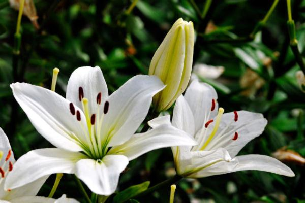
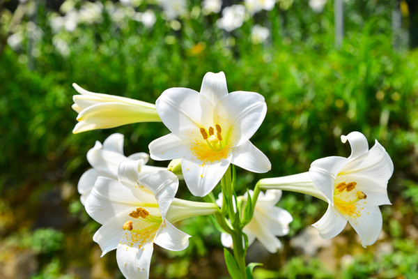

首页>鲜花销售>鲜花种类详细页面
香水百合
别名：天上百合、卡萨布兰卡
分类：鳞茎花卉
科属：植物界 被子植物门 单子叶植物纲 百合目 百合科 百合属
盛花期：
香水百合是百合中的一种，别名卡萨布兰卡，天上百合，原产地为喜马拉雅山区、澳洲，等各个地区。香水百合是百合中的女王，经常在 百合科花朵上见到的斑点，在它的花瓣上是看不到的。所以，它纯白的花瓣总是能开的那麽自傲，它的花 语为「伟大的爱」。它总是能那麽直接地与你伟大的爱相接触。

香水百合的介绍
香水百合是百合中的一种，别名卡萨布兰卡，天上百合，原产地为喜马拉雅山区、澳洲，等各个地区。香水百合是百合中的女王，经常在百合科花朵上见到的斑 点，在它的花瓣上是看不到的。所以，它纯白的花瓣总是能开的那麽自傲 ，它的花语为「伟大的爱」。它总是能那麽直接地与你伟大的爱相接触。
香水百合图片
- 
- 